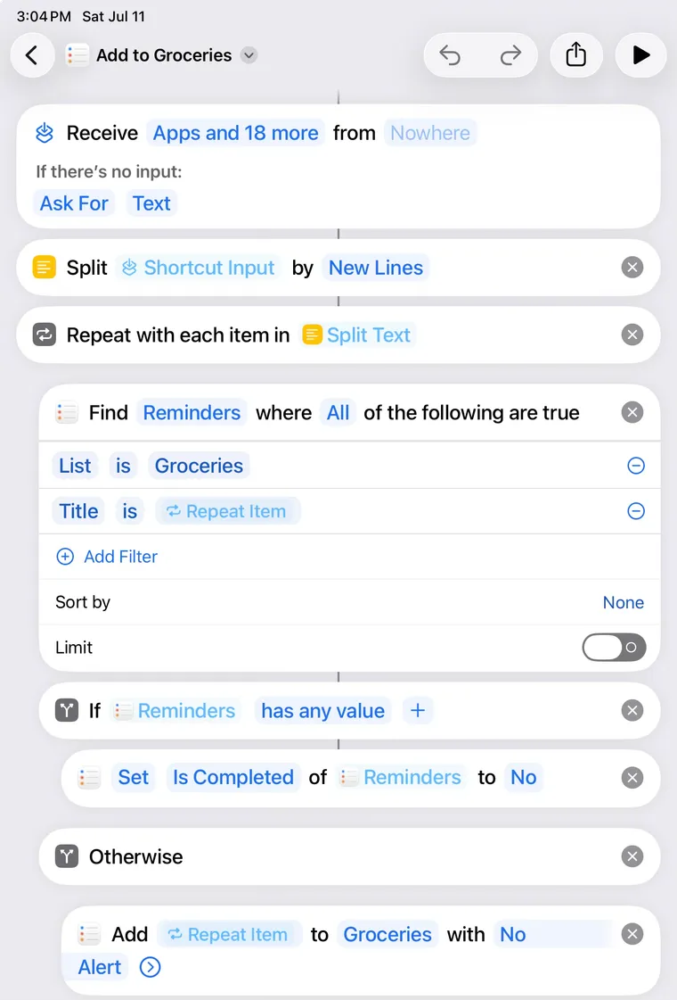

The dinner archive
A living flipbook of the recipes worth repeating — pitched like a menu, filtered like a pantry. Pick a night's craving and turn the page.
How this works. Flip between Food and Drinks
up top, filter to taste, then tap a card to open it and page left/right through the rest.
Stocking up? Hit the on any
card or open recipe to add it to your list — the 🛒 up top scales it to your servings and copies
it in one tap.
Nothing matches those filters yet. and try again.
Quantities scale to your serving count and identical ingredients merge across
recipes (garlic by the bulb, citrus by the fruit, bitters by the bottle).
Only checked items copy. Pantry staples start unchecked — a
flags what you probably already have, and
optional bits sit in their own section.
Add to Reminders hands checked items to a Shortcut, which drops each one into your Groceries list as its own reminder. Takes about a minute, once:

Don't want to set that up? Tap Share… instead — same list, no setup, but Reminders will file it as one reminder with everything in its notes rather than separate checkable items.